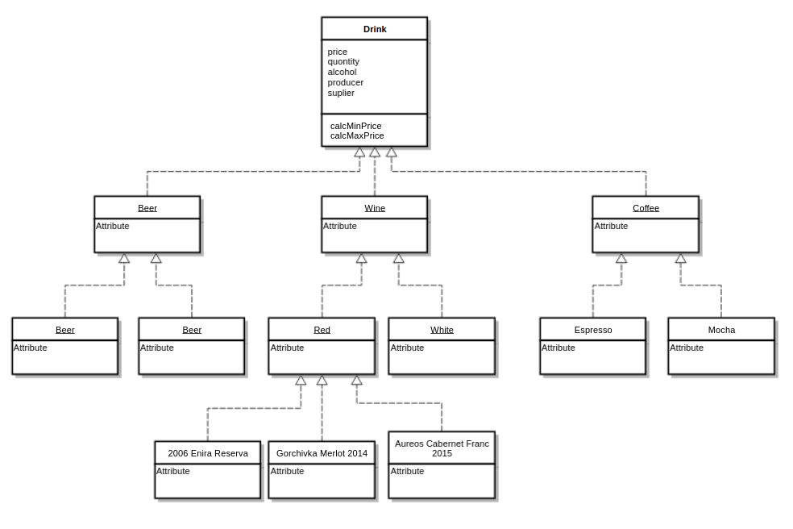

OOP in JavaScript
Created for
Created by
OOP in a nutshell
OOP in a nutshell
Overview
Pros
- Real-World Modelling
- Support and Maintenance
- Structured (code for big systems)
Cons
- Overwhelmed code (for small systems)
- Jailed to development processes, "best practises", frameworks.
Class-based vs. Prototype-based OOP paradigms
- Class-based paradigm
- Objects are instanses of classes
- Classes inherit from classes
- Classes are immutable
- Prototype-based paradigm
- Objects are instanses of objects
- Objects inherit from objects
- Objects are mutable
OOP in JavaScript
| Java | JavaScript |
|---|---|
| Classes | Functions |
| Constructors | Functions |
| Methods | Functions |
Tables excerpt from Douglas Crockford's "Classical Inheritance in JavaScript"
Object creation
Object creation
- Two main ways of object creation:
- Object creation ex nihilo ("from nothing")
- Object creation by cloning an existing object
Object Literal (object initializer)
- An object literal, also known as object initializer, is a comma-delimited list of zero or more pairs of property names and associated values of an object, enclosed in curly braces
{}.
var obj = {
property1: value1,
property2: value2,
...
propertyN: valueN
};
- The value of a property can by any JS data type: a primitive, function or an object
By object literals in JavaScript, we can create associative arrays/dictionaries data structures.
Object Literal example
var apple = {
color: "red",
price: [23.5, 22, 25],
calcMinPrice: function(){
return Math.min( ...this.price ); // from ES6
},
calcMaxPrice: function(){
return Math.max( ...this.price ); // from ES6
}
}
console.log( "apple object", apple );
console.log( "apple min price", apple.calcMinPrice() );
Object Literal: Pros&Cons
- Pros
- Simple and clear syntax for one instance
- Cons
- To much "copy-paste" syntax for multitude instances
The Factory Pattern
"Factory" - a function which creates object instances!
var carFactory = function(model, year){
var obj = {};
obj.model = model;
obj.year = year;
return obj;
}
Factory Pattern - simple example
var objFactory = function(name){
var obj = {};
obj.name = name;
obj.sayName = function(){
console.log(`I'm object: ${obj.name}`)
};
return obj;
}
var obj1 = objFactory('Object 1');
var obj2 = objFactory('Object 2');
obj1.sayName();
obj2.sayName();
// I'm object: Object 1
// I'm object: Object 2
Factory Pattern - flexibility example
"use strict";
// aux constructors
function AudioPlayer(name){
this.name = name;
this.play = ()=>{
console.log(`${this.name} is playing as Audio!`);
}
}
function VideoPlayer(name){
this.name = name;
this.play = ()=>{
console.log(`${this.name} is playing as Video!`);
}
}
// the factory
function mediaPlayerMaker(name) {
if(name.match(/\.(?:mp3|ogg|flack)$/i) ){
return new AudioPlayer(name);
}
if (name.match(/\.(?:mp4|avi|divx)$/i)) {
return new VideoPlayer(name);
}
}
// the instancies
const player1 = mediaPlayerMaker('time_lapse.mp3');
const player2 = mediaPlayerMaker('micahel_nyman_band_live.avi');
// the usage
player1.play();
player2.play();
// time_lapse.mp3 is playing as Audio!
// micahel_nyman_band_live.avi is playing as Video!
The Factory as mechanism to enforce encapsulation
- As we saw, the only way to enforce encapsulation in JavaScript is by function scopes and closures
- And Factory is just a function!
"use strict";
var objFactory = function(name){
// private members
var name = name;
// public
var obj = {
sayName: () =>console.log(`I'm object: ${name}`),
};
return obj;
}
var obj1 = objFactory('Object 1');
obj1.sayName();
console.log(`obj1.name: ${obj1.name}`);
// I'm object: Object 1
// obj1.name: undefined
Factory Pattern: Pros&Cons
- Pros
- Great flexibility and implementation independence.
- Can create objects as literal, by constructor, by
Object.create() - Cons
- Not familiar for "classical" OOP programmers
Constructor Function
- Constructor function is a function which constructs objects. I.e. definesobjects and their features
- JavaScript emulates classes via constructor functions
- Every function in JS can act as a Constructor function.
- What make difference is the way you call the constructor function!
- The naming convention for a constructor function is to start it with capital letter - this convention is used to make constructor functions easier to recognize in code.
Constructor Function - example
// the Constructor Function:
var AppleMaker = function( color, prices ){
console.log("I'm the AppleMaker!");
this.color = color;
this.prices = prices;
this.calcMinPrice = function(){
return Math.min( ...this.prices ); // from ES6
};
this.calcMaxPrice = function(){
return Math.max( ...this.prices ); // from ES6
};
}
// objects constructing:
var apple1 = new AppleMaker("red", [3.5, 2, 2.5]);
var appleN = new AppleMaker("green", [1.80, 2.10, 2.40]);
// objects usage:
console.log( "apple1 min price: ", apple1.calcMinPrice());
Constructor Function: Pros&Cons
- Pros
- Easy to create multiple instances.
- Cons
newandthisproblems!
The Object.create() method
The Object.create() method creates a new object with the specified prototype object and properties.
Object prototypes are discussed further.
Object.create()Object properties
Property names
- Property names must be strings
- If they are not, JavaScript try to typecast them
Accessing properties - the dot notation
get = object.property;
object.property = set;
propertymust be a valid identifier!
var obj = {};
obj.$1 = "first"; // valid
obj.1 = "first"; // invalid
Accessing properties - square brackets notation
get = object[property_name];
object[property_name] = set;
property_nameis a string, or expression that evaluates to string!property_namecan be any string, not necessarily valid identifier.
var obj = {};
var keyName = 2;
obj["1"] = "first"; // valid
obj[keyName] = "second"; // valid
console.log(obj)
// Object {1: "first", 2: "second"}
Duplicate property names
- An object can not have 2/more properties with a same name!
- When 2/more properties with a same name are given, then the last of them will overwrite the others.
var obj={
prop1: 1,
prop2: 2,
prop1: 3,
prop4: 4
}
console.log(obj);
// Object {prop1: 3, prop2: 2, prop4: 4}
Computed property names (ES2015)
- ES2015 spec allow an expression to be placed inside square brackets, which will be computed as the property name
var i = 0;
var obj = {
[`key${++i}`] : i,
[`key${++i}`] : i,
[`key${++i}`] : i,
};
console.dir(obj);
// Object
// key1: 1
// key2: 2
// key3: 3
Shorthand property names (ES2015)
var key1 = 'first', key2 = 'second';
var obj = {key1, key2};
console.log(obj);
// Object {key1: "first", key2: "second"}
Shorthand method notation (ES2015)
- We can omit the function keyword, when defining methods after ES2015
var obj = {
id: 1,
sayID(){console.log(this.id)},
}
obj.sayID();
// 1
Exercises
The Factory Pattern - exercise (smartLogger)
- TASK: implement a
loggerobject, whose methodslog()anddir()works on top of the standardconsolemethods, but log a message if the script is running under developers/test environment, and outputs nothing, if the script is started on production environment.- Tips: you can simulate a development or production environment by using the simple live-server. Start it with two instances on different posts and test your logger on them
These slides are based on
customised version of
framework